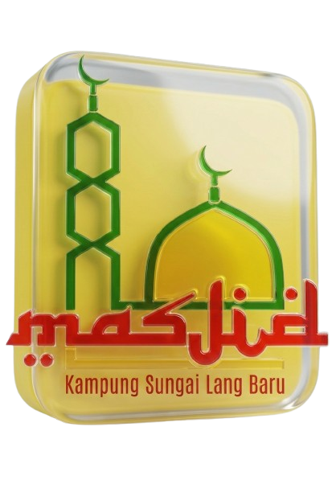

<!DOCTYPE html>
<html lang="ms">
<head>
    <meta charset="utf-8">
    <title>OBS Source - Tazkirah Edition</title>
    
    <link rel="stylesheet" href="common/css/style-source.css">
    
    <script src="common/js/jquery.js"></script>

    <style>
        /* Canvas 1920x1080 untuk OBS */
        body {
            background-color: transparent !important;
            overflow: hidden;
            width: 1920px;
            height: 1080px;
            margin: 0;
            padding: 0;
        }

        #display-container {
            position: relative;
            width: 100%;
            height: 100%;
        }

        /* Bekas Logo Masjid */
        .logo-container {
            width: 65px;
            height: 65px;
            display: flex;
            align-items: center;
            justify-content: center;
            margin-right: 5px;
        }

        .logo-container img {
            max-width: 100%;
            max-height: 100%;
            object-fit: contain;
            /* Memberi sedikit bayang pada logo supaya nampak timbul */
            filter: drop-shadow(2px 2px 3px rgba(0,0,0,0.5));
        }
    </style>
</head>
<body class="browser-source">
    <div id="display-container"></div>

    <script>
        const bcp = new BroadcastChannel('obs-lower-thirds-channel');

        // Jana 10 bekas Lower Third secara dinamik dengan sokongan LOGO
        for (let i = 1; i <= 10; i++) {
            $('#display-container').append(`
                <div id="lower-third-${i}" class="alt left hide-anim" style="display:none;">
                    
                    <div class="logo-container">
                        
                    </div>

                    <div class="graph-1"></div> 

                    <div class="text-content">
                        <div class="text-mask">
                            <div id="alt-${i}-name" class="name-text"></div>
                        </div>
                        <div class="text-mask">
                            <div id="alt-${i}-info" class="info-text"></div>
                        </div>
                    </div>
                </div>
            `);
        }

        // Fungsi mendengar arahan dari Control Panel (index.html)
        bcp.onmessage = function(ev) {
            const data = ev.data;
            const target = $(`#lower-third-${data.id}`);
            const nameEl = $(`#alt-${data.id}-name`);
            const infoEl = $(`#alt-${data.id}-info`);

            if (data.switch) {
                // Masukkan teks dari panel ke dalam source
                nameEl.text(data.name);
                infoEl.text(data.info);

                // Paparkan dengan animasi
                target.show();
                setTimeout(() => {
                    target.removeClass('hide-anim').addClass('animation-in');
                }, 50);
                
            } else {
                // Jalankan animasi keluar
                target.addClass('hide-anim').removeClass('animation-in');
                
                // Sembunyikan elemen selepas animasi 0.6s tamat
                setTimeout(function() {
                    if (target.hasClass('hide-anim')) {
                        target.hide();
                    }
                }, 600);
            }
        };
    </script>
</body>
</html>
